Intro
Lecture 12从多个角度对CNN网络进行分析和理解。我的理解肯定会有很多错误之处，欢迎指出，共同进步！
课程内容
First Layer: Visualize Filters
第一层卷积，可以直接看到Filter学习到的特征。
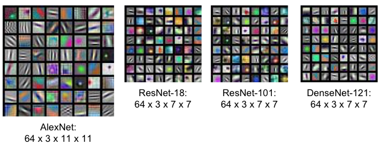
Visualize filters at higher layers
中间卷积层的Filters，可以查看内容（卷积核是4维，故展示出来是图像组成的二维矩阵），但是不能直观的查看学习到了什么特征。
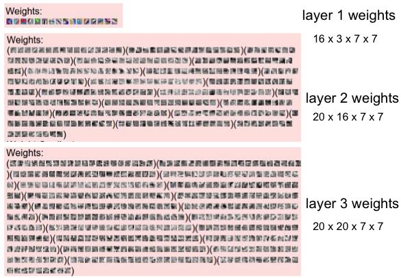
And Why？
Last Layer
指最后的全连接层，代表图片最后的特征向量。
Nearest Neighbors
最后得到的特征向量相似，那么输入图片肯定也相似。
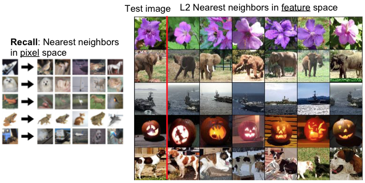
其中左边是通过KNN来找到的最相近图片，右边是CNN实现的。可以发现，左侧只是找到了观感上相近的图片（青蛙跟猫的姿势和方向类似），甚至不能保证是同一类别，正确率很低；而右侧则很好地完成了任务，与物体方向相关性不强。
个人观点，搜索引擎的图片查找功能，可以通过类似的思路实现。
Dimensionality Reduction
将最后的特征向量降至二维，以便于我们直观上来理解。
更复杂的降维方式：t-SNE
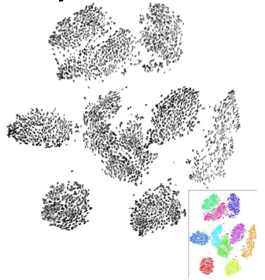
上图的例子是识别0-9十个数字，降维到二维以后还是能保持聚类形态。
Visualizing Activations
不再观察Filters的值，改为直接观察中间层的Activation值，会发现某些值“拟合”了输入数据。
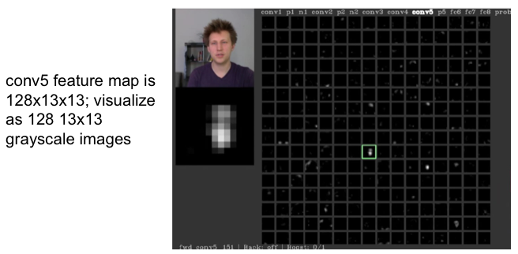
上图绿框中的神经元“拟合”了输入图片。
Maximally Activating Patches
选取CNN网络某一层的某个channel，观察这个channel中的最大值对应的原图区域。
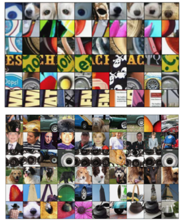
可以发现，通常某个神经元会对应特定的“模式”，如上图中所示，比如圆形、人脸、文字等等。
Occlusion Experiments
将原图中的某个区域遮挡起来，然后通过CNN网络，得到其属于正确分类的概率。由此可以发现原图中哪一部分对分类来说是最重要的。
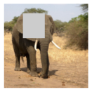
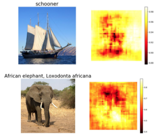
Saliency Maps
最后得到的特征向量对原图做偏导。
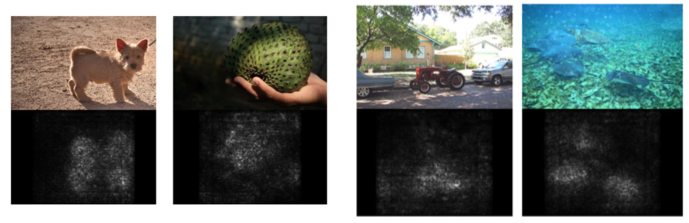
具体做法是取最后的特征向量中正确分类的值，然后反向传播对原图求偏导。取其绝对值。由于原图有RGB三个通道，所以取三个中的最大值。
Saliency Map还有一个用途是图像分割。但结果不是很准确。
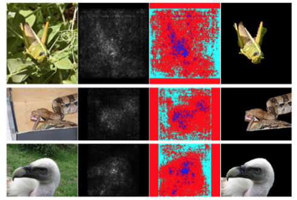
Intermediate Features via (guided) backprop
取CNN网络中的某个神经元，对原图做反向传播求梯度。由此找出该神经元对应原图中的哪个区域。
与Saliency Maps和Maximally Activating Patches都有些类似，与前者的差别在于这里取中间某个layer的某个神经元的值做反向传播，而Saliency Maps是取最后一层对应正确分类的那个值。与后者的差别在于这里采用了反向传播和梯度，而Maximally Activating Patches只是对应了原图中的区域。
下图展示了与Maximally Activating Patches的异同
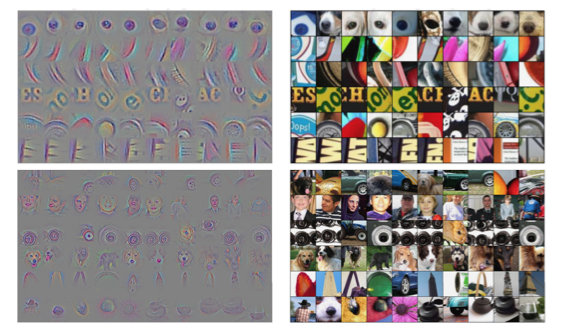
如果在对Relu做反向传播的过程中，只将正的梯度反向传播，得到的图像结果会更好，这种就叫guided。
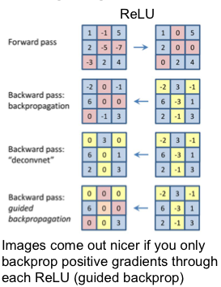
如上图所示，第一行是Relu的正向传播，第二行的图片是Relu正常的反向传播（注意是正向传播时X中正值的区域会被传回），第三行的图是将正值的梯度反向传播，第四行的图结合了第二、三行的图，即只将正的梯度做Relu反向传播。
红色区域表示正常的Relu反向传播不会被传回，黄色区域表示负值的梯度不会被反向传播，只有两种颜色都不覆盖的区域才会被传回。
Visualizing CNN features: Gradient Ascent
通过合成一张图片，展现CNN网络是如何“看待”某个分类的。
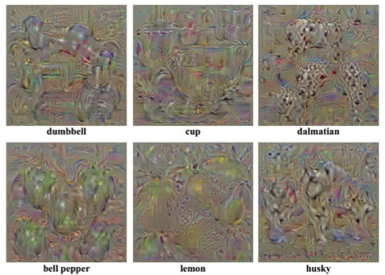
具体过程如下：
- 初始化一张空图片（注意不是随机初始化）
重复以下步骤：
- 在训练好的CNN网络上进行前向传播，得到最后的特征向量，取其中正确分类的值
- 将该值对原图反向传播求梯度
- 用该梯度值更新图片
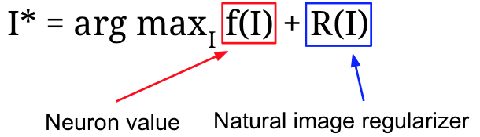
regularizer的作用是使结果看起来更加自然，可以采用简单和复杂两种形式。
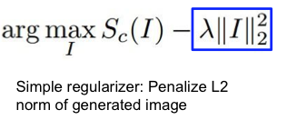
简单形式采用了L2范数
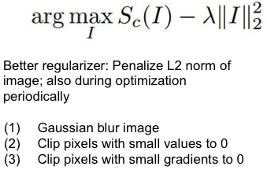
复杂形势除了才去L2范数以外，还在优化过程中采用了：
- 高斯模糊
- 将小值直接变为0
- 将小的梯度值直接变为0
采用复杂形式的结果更好:
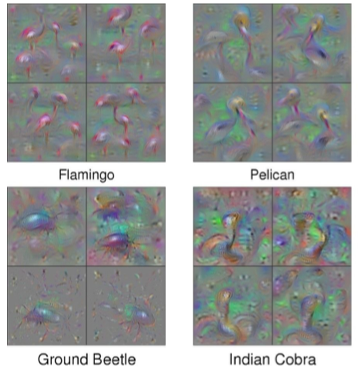
中间层同样也可以展示：
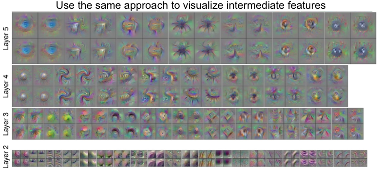
Fooling Images
跟GAN是一个思路，即只需要更改少量像素，在人眼看不出区别的情况下，就可以更改一张图片在CNN中的分类结果。
具体实现过程：取分类A中的一张图片，将其分类结果设置为B。前向传播图片，得到与B分类结果的误差，反向传播更新原图，直到CNN网络将其判断为分类B。
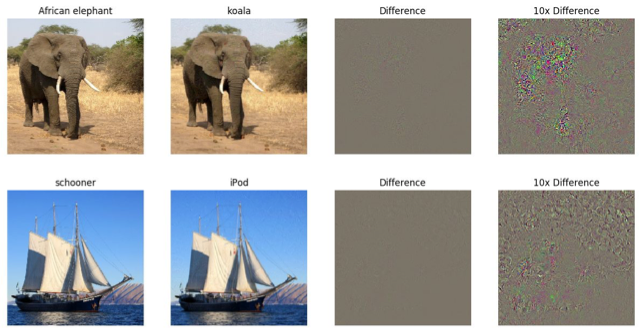
DeepDream
首先，网络是预先在某种数据集上训练过的。
输入一张图片，将其在CNN网络某一层的值作为梯度进行反向传播，更新原图。
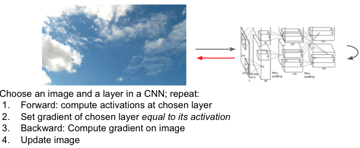
原理是什么呢？
课件中最开始例子中的网络的训练集是动物，那么网络各中间层学习到的是各种动物由浅到深的特征。如果输入一张不相关的风景图，网络依然会尝试在该图上寻找之前学习到的各种特征。如果网络觉得某部分云彩看起来像一条狗，那么我们就将这个结果反馈回原图，再将新的图片通过网络，不断地增强这个印象，直至能够将其清楚地表现出来。
选取不同的中间层，结果不一样。如果选择的是开始的一些层，那图片累计的也是一些基础组件特征。这是由CNN网络的特性决定的，越往后学习到的特征越复杂。
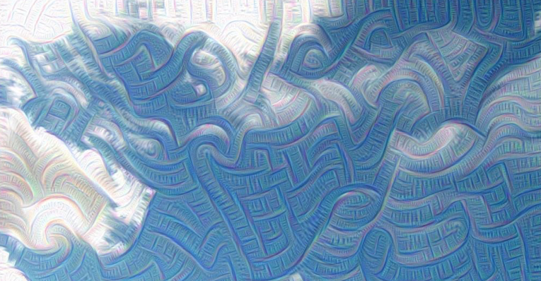
如果选择的是后面的一些层，那图片上就会出现比较复杂的特征。
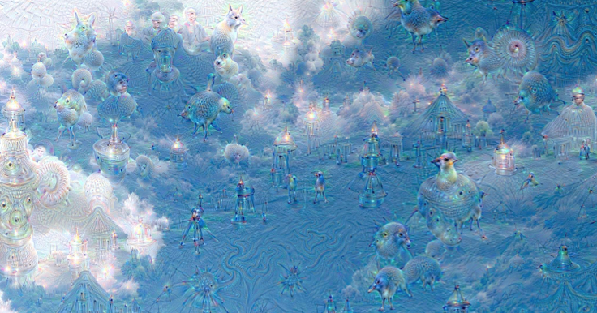
反向回的图像与该CNN网络是在什么样的数据集上训练的密切相关。如果训练数据集是建筑或者风景，那么图片混合上的也是相关的东西。
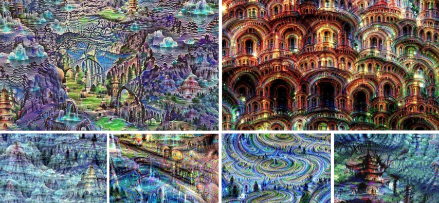
Feature Inversion
尝试从CNN网络恢复原图。
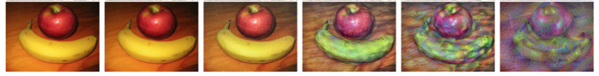
取CNN网络某一层的Feature Map。随机初始化一张新图片，并得到其在对应层上的Feature Map。比较两个Feature Map的差距并反向传播更新生成的图片。
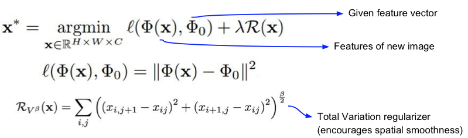
由于越早的层保留的信息越多，所以恢复的图像也越接近原图。
加入Regulation以使图片看起来更加自然。
Texture Synthesis
Gram Matrix
Gram Matrix求法：
- 取Feature Map某个“像素”上各个维度上的值，得到一个向量C。
- 将C与其转置相乘，得到一个矩阵。该矩阵表示这个“像素”上各个特征之间的关系。
- 取Feature Map上所有的“像素”进行1和2两步操作，取这些结果的平均值，即为Gram Matrix。

那么，Gram Matrix表示了什么呢？是该Feature Map各个维度之间的关系。更进一步引申为该Feature Map的特征。
Nerual Texture Synthesis
学习小的质地来生成更大面积的质地。
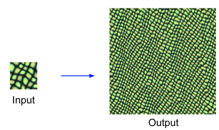
先介绍了以前的方法：NN。
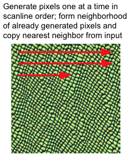
这种方法存在一些问题，比如下图生成的Texture，很显然并不是均匀分布的砖块。
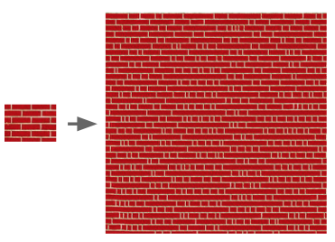
更加先进的方法：通过Gram Matrix来实现。思路：计算两张图各层Feature Map的Gram Matrix，将他们的差距累加起来作为Loss Function，用该Loss Function对合成图的梯度来更新合成图。这样就可以将原图各层的特征都学习到了。也就是学习到了“风格”。
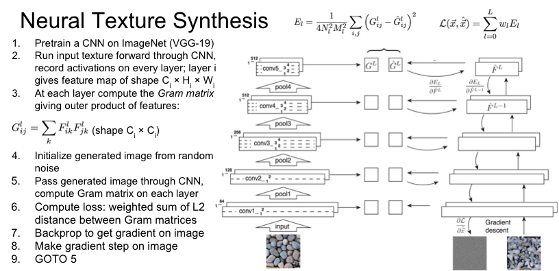
效果如下：
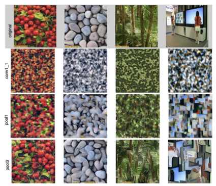
Nerual Style Transfer
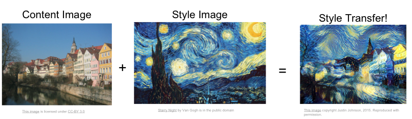
Style Transfer是把之前的Feature Inversion和Texture Synthesis结合起来。其中，Feature Inversion负责从Content Image中学习图片的整体布局信息，而Texture Synthesis则从Style Image中学习风格。这样，最终生成的图片中就既包含了Content Image的整体布局，又包含了Style Image的风格。
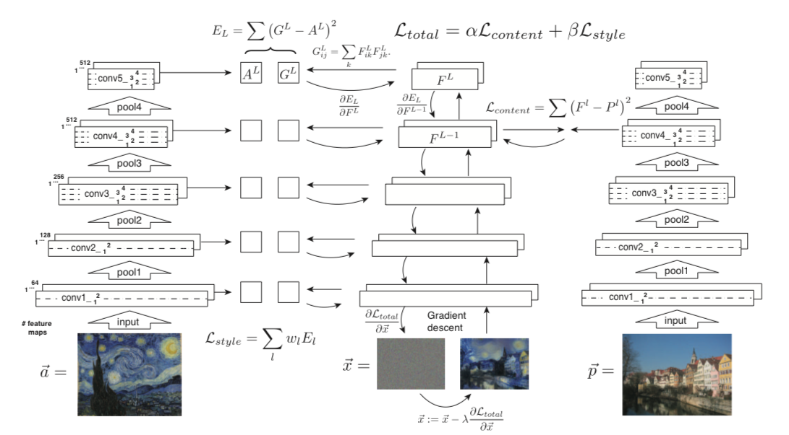
Fast Style Transfer
上面介绍的风格迁移算法，计算量非常大，需要在CNN网络上进行多次前向和后向传播，非常耗时，无法完成实时地迁移。
解决方案：引入一个新的网络，并使用预训练的CNN网络。
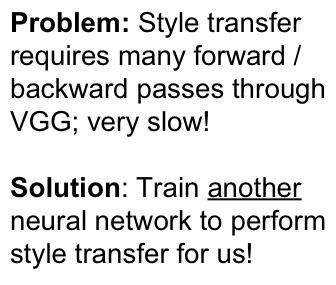
下面是整体的结构图：
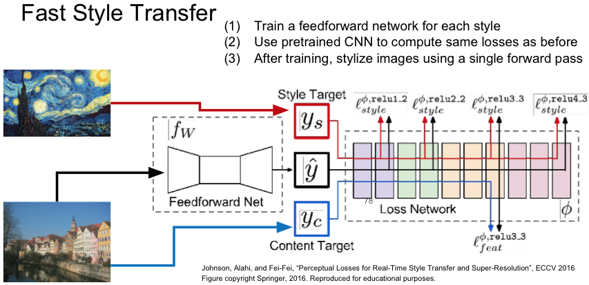
Summary
总结，将介绍的这些方法分为三类：
Activations
包括：Nearest neighbors, Dimensionality reduction, maximal patches, occlusion
通过观察卷积网络各层的值来进行分析。
Gradients
包括：Saliency maps, Class visualization, fooling images, feature inversion
通过梯度进行分析，包括对原图进行更改和生成新图片两种方式。
Fun
包括：DeepDream, Style Transfer
寓教于乐不思蜀中无大将廖化作先锋芒毕露